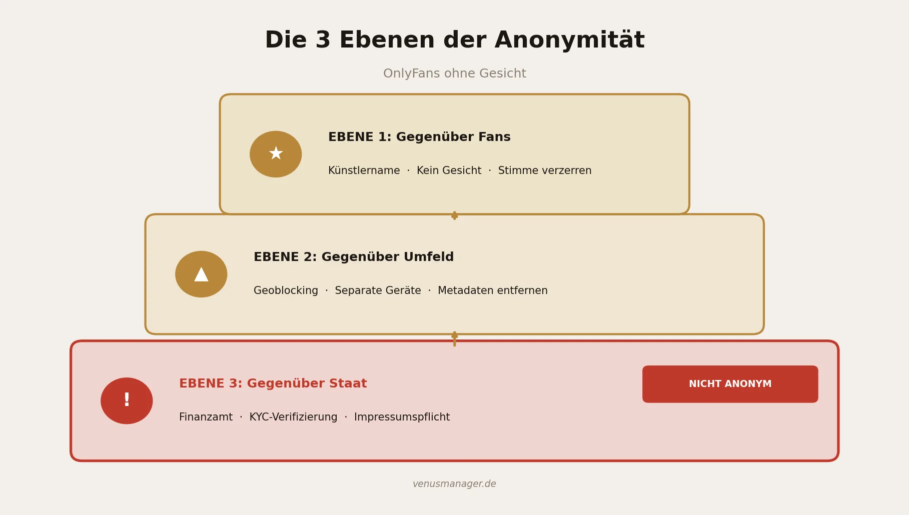
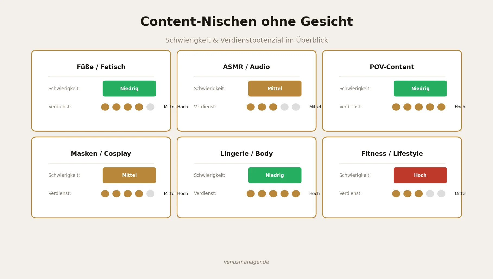

Die drei Ebenen der Anonymität: vor Fans, vor deinem Umfeld — und was der Staat trotzdem wissen muss.

OnlyFans ohne Gesicht: Der komplette Anonymitäts-Guide für Creator in Deutschland
2024 haben Fans weltweit 7,22 Milliarden Dollar auf OnlyFans ausgegeben. 4,63 Millionen Creator teilen sich diesen Kuchen — und ein wachsender Anteil davon zeigt kein Gesicht. Nicht aus Scham, sondern aus Strategie. Anonymität ist kein Schalter, den du ein- oder ausschaltest. Sie hat Ebenen — und auf einer davon darfst du gar nicht anonym sein. Dieser Guide zeigt dir genau, wo du dich schützen kannst, wo du es solltest, und wo der Staat es dir schlicht nicht erlaubt.

Funktioniert OnlyFans ohne Gesicht wirklich?
Ja — mit einer wichtigen Einschränkung.
Faceless Creator verdienen nach Branchenschätzungen im Schnitt etwa 30 bis 50 Prozent weniger als Creator, die ihr Gesicht zeigen. Das klingt erstmal nach einem harten Nachteil. Aber schau dir die andere Seite an: Bei Top-Earner-Accounts machen Chat und Messaging rund 70 Prozent des Umsatzes aus (Quelle: ofstats.net). Persönliche Nachrichten, Pay-per-View-Messages, Tipps auf Custom Content — das ist das eigentliche Geschäft. Und dafür braucht niemand dein Gesicht zu sehen.
Trotzdem solltest du die Zahlen kennen: Der Durchschnittsverdienst auf OnlyFans liegt bei etwa 131 Dollar pro Monat — wobei die Einkommensverteilung auf der Plattform extrem ungleich ist. Die oberen 10 Prozent verdienen rund 73 Prozent aller Einnahmen. Mit einer klaren Nische, konsequentem Posting und aktivem Chat-Management ist aber deutlich mehr möglich. Der Mythos vom schnellen Reichtum ohne Arbeit bleibt trotzdem genau das: ein Mythos.
Wenn du dich fragst, wie der Einstieg generell funktioniert, lies unseren Guide zum Start auf OnlyFans. Dort findest du die Grundlagen, bevor wir hier in die Anonymitäts-Strategie einsteigen.
Die 3 Ebenen der Anonymität
Die meisten Ratgeber behandeln Anonymität als eine einzige Frage: Gesicht zeigen oder nicht. In Wahrheit gibt es drei völlig verschiedene Ebenen — und du musst für jede einzelne eine bewusste Entscheidung treffen.
Künstlername statt Klarname. Wähle einen Namen, der nicht auf dich zurückführbar ist. Kein Spitzname, den Freunde kennen. Kein abgewandelter echter Name. Etwas komplett Neues.
Kein Gesicht im Content. Achte auf Details: kein Profil von der Seite, keine erkennbaren Gesichtszüge im Hintergrund (Spiegel!), keine Fotos, die du auch auf privaten Accounts nutzt.
Stimme verzerren oder vermeiden. Deine Stimme ist ein biometrisches Merkmal. Nutze Tools wie Voicemod oder Clownfish — oder setze komplett auf textbasierten Chat, wo ohnehin das meiste Geld steckt.
Tattoos und Merkmale verdecken. Auffällige Tattoos, Muttermale oder Narben können dich genauso identifizierbar machen wie ein Gesicht.
- Geoblocking für DACH aktivieren. OnlyFans erlaubt das Sperren ganzer Länder. Die meisten Creator, die wir bei Venus Manager betreuen, sperren nur Deutschland und konzentrieren sich auf englischsprachige Märkte.
- Separate Geräte und Accounts. Ein eigenes Handy für Content-Produktion minimiert das Risiko versehentlicher Sichtbarkeit.
- Separates Geschäftskonto. OnlyFans-Auszahlungen gehen auf das hinterlegte Konto — nutze unbedingt ein eigenes Geschäftskonto, nicht ein gemeinsames Konto mit Partner oder Familie.
- Metadaten aus Fotos entfernen. EXIF-Daten enthalten GPS-Koordinaten und Gerätemodell. Tools wie ExifTool, Metapho (iOS) oder Scrambled Exif (Android) erledigen das in Sekunden.
- VPN mit Bedacht einsetzen. Ein VPN verschleiert deine IP-Adresse und verhindert, dass dein Internet-Provider sieht, welche Seiten du besuchst.
KYC-Pflicht bei der Anmeldung. OnlyFans verlangt eine Identitätsverifizierung mit Personalausweis oder Reisepass. Die Plattform kennt deinen echten Namen, dein Geburtsdatum und deine Adresse.
Gewerbeanmeldung. Sobald du regelmäßig Einnahmen erzielst, bist du in Deutschland gewerbepflichtig. Details findest du in unserem ausführlichen Steuer-Guide für OnlyFans.
DAC7-Meldepflicht. Seit 2023 übermittelt OnlyFans Umsatzdaten direkt an das Bundeszentralamt für Steuern. Laut einem Bericht von Hortmann Law wurden bereits über 6.000 DAC7-Datensätze an deutsche Finanzbehörden übermittelt.
Impressumspflicht nach DDG §5. Wenn du dein OnlyFans-Profil öffentlich bewirbst, brauchst du ein Impressum. Die Lösung: Eine c/o-Adresse über Anbieter wie adressgeber.de.
Steuer-Rücklage bilden. Lege mindestens 30 Prozent deiner Einnahmen zurück. OnlyFans zahlt brutto aus — Einkommensteuer, Gewerbesteuer und ggf. Umsatzsteuer musst du selbst abführen.
Content-Ideen ohne Gesicht: Die Nischen-Matrix
OnlyFans ohne Gesicht bedeutet nicht, dass dir die Ideen ausgehen. Im Gegenteil — Faceless Content zwingt dich, kreativer zu werden und eine klare Nische zu besetzen.

| Nische | Schwierigkeit | Verdienstpotenzial | Beste Promo-Plattform |
|---|---|---|---|
| Füße / Fetisch | Niedrig | Mittel bis hoch | Reddit, X/Twitter |
| ASMR / Audio | Mittel | Mittel | TikTok (SFW-Teaser), Reddit |
| POV-Content | Niedrig | Hoch | Reddit, X/Twitter |
| Masken / Cosplay | Mittel | Hoch | Instagram (SFW), Reddit |
| Lingerie / Body-Ästhetik | Niedrig | Mittel bis hoch | Reddit, X/Twitter |
| Fitness / Lifestyle | Mittel | Mittel bis hoch | TikTok, Instagram |
| Kunst / Fotografie | Hoch | Niedrig bis mittel | Instagram, Pinterest |
Füße und Fetisch-Content sind der Klassiker für Faceless Creator. Die Einstiegshürde ist niedrig, die Nachfrage konstant. Viele Creator in diesem Bereich verdienen solide vierstellig pro Monat — komplett ohne Gesicht.
ASMR und Audio-Content erleben gerade einen Boom. Flüstern, Alltagsgeräusche, Rollenspiele — alles nur mit Stimme (ggf. verzerrt) oder Geräuschen. Die Produktion ist aufwendiger, aber die Community ist loyal und zahlungsbereit.
POV-Content (Point of View) zeigt Szenen aus der Ich-Perspektive. Die Kamera ist dort, wo dein Gesicht wäre — einfach umzusetzen und sehr gefragt.
Masken als Markenzeichen drehen den Nachteil um: Die Maske wird zum Wiedererkennungsmerkmal. Venezianische Masken, Cosplay-Elemente oder künstlerische Gesichtsverhüllungen schaffen einen visuellen Signature-Look.
Marketing als anonymer Creator
Dein größtes Problem als Faceless Creator ist nicht der Content — es ist die Sichtbarkeit. Ohne Gesicht fehlt dir das stärkste Werkzeug für organisches Wachstum auf Social Media. Aber es gibt Kanäle, die genau für deine Situation gemacht sind.
Reddit: Dein wichtigster Kanal
Reddit ist mit Abstand die beste Plattform für anonyme OnlyFans-Creator. Der Grund: Reddit ist von Natur aus pseudonym. Niemand erwartet, dein Gesicht zu sehen. NSFW-Subreddits erlauben direkte Links zu OnlyFans, und die Community-Struktur belohnt Nischen-Content. Finde 5 bis 10 Subreddits, die zu deiner Nische passen. Poste regelmäßig hochwertigen Teaser-Content. Interagiere in den Kommentaren. Baue Karma auf.
X/Twitter für direkte Links
X ist eine der wenigen großen Plattformen, die NSFW-Content und direkte OnlyFans-Links erlaubt. Für Faceless Creator funktionieren hier besonders gut: Teaser-Bilder mit verlinktem OnlyFans, Threads über deine Nische und Interaktion mit anderen Creatorn.
TikTok und Instagram: Nur mit Vorsicht
Diese Plattformen sind SFW — du kannst dort weder expliziten Content posten noch OnlyFans direkt verlinken. Nutze hierfür separate Geräte und Accounts. TikTok und Instagram sind sehr gut darin, Accounts miteinander zu verknüpfen — über Kontaktbücher, GPS-Daten, IP-Adressen. Wenn du deinen Creator-TikTok auf demselben Handy betreibst wie deinen privaten Account, wird die Plattform irgendwann Leuten aus deinem echten Umfeld deinen Creator-Account vorschlagen.
Leak-Schutz und DMCA-Takedowns
Egal wie vorsichtig du bist — Content-Leaks sind eine Realität auf OnlyFans. Dein Content wird kopiert, auf Piratenseiten hochgeladen und weiterverbreitet. Für Faceless Creator ist das ein doppeltes Problem: Es kostet dich Einnahmen und erhöht die Chance, dass dein Content irgendwo auftaucht, wo jemand aus deinem Umfeld ihn findet.
Professionelle Takedown-Services im Vergleich
Rulta ist einer der größten DMCA-Services und hat nach eigenen Angaben über 100 Millionen URLs entfernen lassen. Scannt automatisch und schickt Takedown-Notices an Hoster.
Pakete ab ca. 50–70 Dollar pro Monat. Kombiniert automatische Erkennung mit manuellen Takedowns. Besonders bei OnlyFans-Creatorn beliebt.
CopyrightShark ist deutschsprachig — ideal, wenn du bei deutschen Hostern Takedowns durchsetzen musst.
Typische OPSEC-Fehler, die dich verraten
Diese Fehler stammen direkt aus der Reddit-Creator-Community. Jeder einzelne hat schon jemanden enttarnt.
Gleiche Fotos auf privaten und Creator-Accounts
Du machst ein Foto von deinem neuen Outfit und postest es auf Instagram. Drei Tage später postest du ein ähnliches Bild auf OnlyFans. Jemand erkennt den Hintergrund, die Kleidung, den Ausschnitt. Regel: Fotos werden entweder privat ODER für den Creator-Account gemacht. Nie beides.
Metadaten nicht entfernt
Ein Foto mit GPS-Koordinaten deiner Wohnung auf einem Pirate-Reupload — und jemand mit Google Maps findet heraus, wo du wohnst. Das ist kein Paranoia-Szenario, das passiert.
Spiegelungen und Reflexionen übersehen
Dein Gesicht spiegelt sich im Handy-Display, im Badezimmerspiegel, in einer Sonnenbrille, in einer Fensterscheibe. Prüfe jeden einzelnen Frame deines Contents auf Reflexionen.
Privates WLAN ohne VPN
Wenn du zu Hause Content produzierst und hochlädst, sieht dein Internet-Provider den Traffic zu OnlyFans. In einem Mehrpersonenhaushalt kann das unangenehm werden. Ein VPN löst dieses Problem.
Gleiches Gerät für privat und Creator
Dein Handy synchronisiert Fotos in die Cloud. Eine App greift auf deine Kontakte zu. Eine Push-Notification poppt auf, während jemand neben dir sitzt. Separate Geräte sind keine Paranoia, sondern Grundausstattung.
Hintergrund-Details
Ein unverwechselbares Möbelstück, ein Fensterblick, ein Straßenschild im Hintergrund — all das kann dich lokalisieren. Nutze neutrale Hintergründe oder variiere sie bewusst.
FAQ: OnlyFans ohne Gesicht
Du willst OnlyFans ohne Gesicht starten, aber nicht alles allein herausfinden? Venus Manager unterstützt Creator in Deutschland beim Aufbau ihres Accounts — von der Anonymitäts-Strategie über Content-Planung bis zum Leak-Schutz.
Erfahre, was ein OnlyFans Manager für dich tun kann oder starte jetzt mit deinem Account.
Anonym starten — mit der richtigen Strategie
Lass uns gemeinsam deine individuelle Anonymitäts- und Wachstumsstrategie entwickeln — unverbindlich und kostenlos.
Kostenloses Erstgespräch buchen